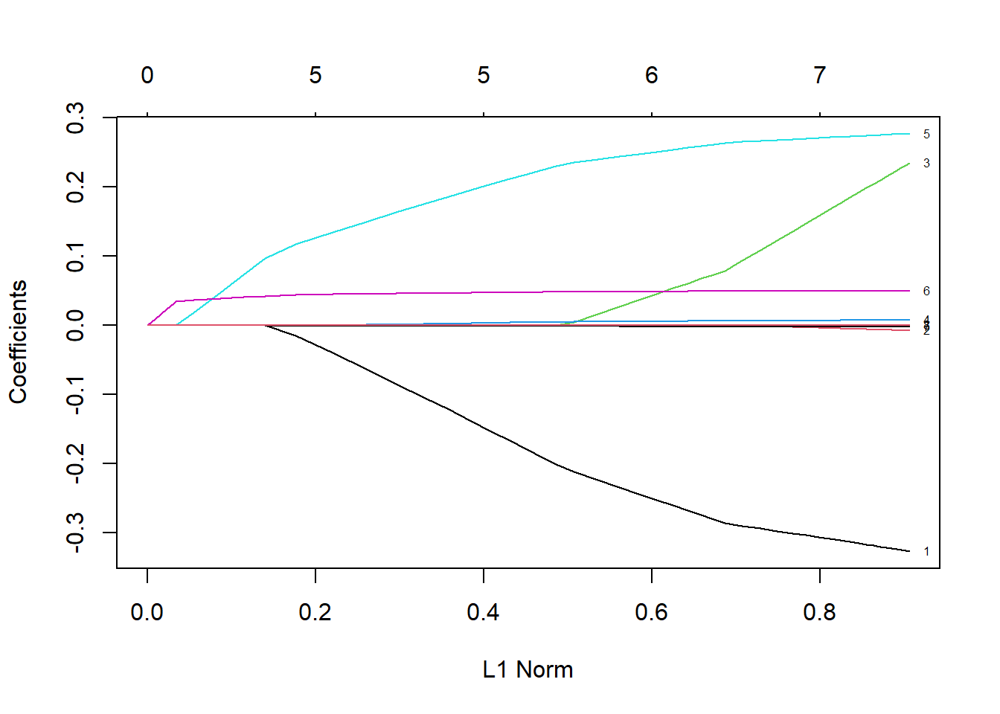
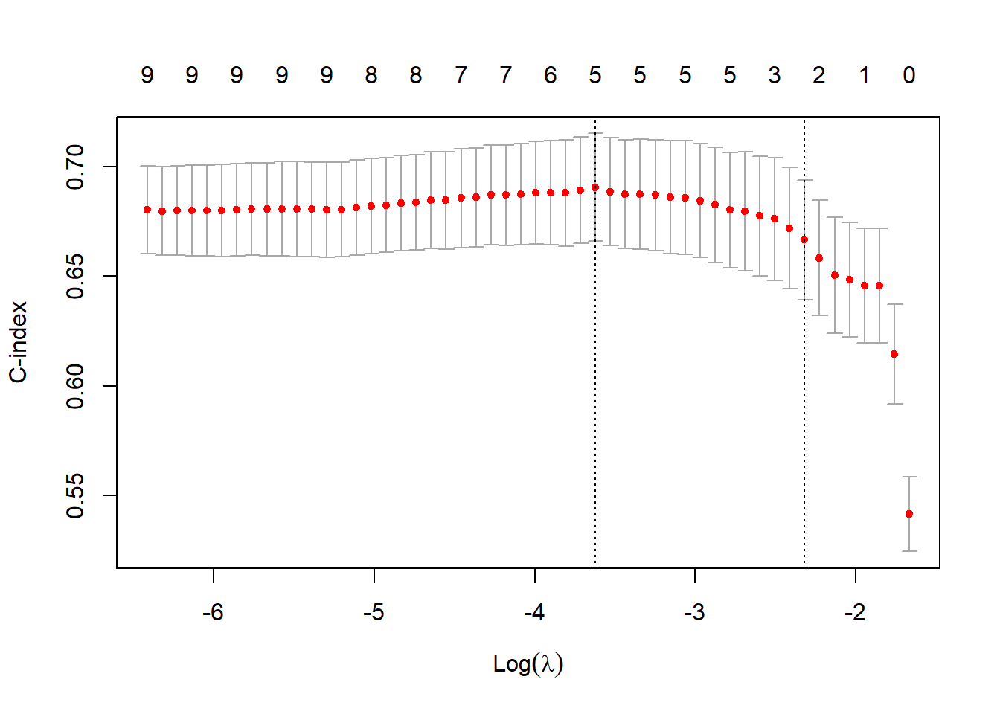
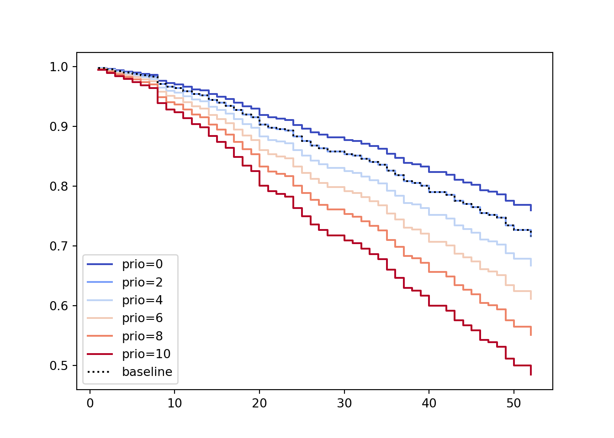
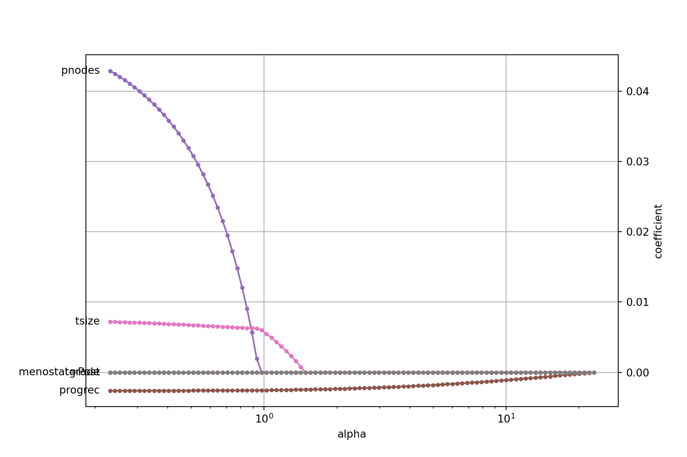

Chapter 2 Introduction to Survival
Welcome to the Survival Analysis module! This document will be periodically udated throughout the course. As always, first thing we need to do is get all of the packages needed for the course:
library(survival)
library(foreign)
library(ggplot2)
library(survminer)
library(rms)
library(flexsurv)
library(dplyr)
library(ciTools)
library(here)
library(visreg)
library(cmprsk)
library(reticulate)
use_python("C:\\ProgramData\\Anaconda3\\python.exe")Also need to get data sets that will be used throughout this course (all of these can be found on the GitHub repository for the course):
loyalty=read.csv("https://raw.githubusercontent.com/sjsimmo2/Survival/master/loyalty.csv",header=T)
recid=read.csv("https://raw.githubusercontent.com/sjsimmo2/Survival/master/recid.csv",header=T)
recid_long=read.csv("https://raw.githubusercontent.com/sjsimmo2/Survival/master/recid_long.csv",header=T)
recid_lag=read.csv("https://raw.githubusercontent.com/sjsimmo2/Survival/master/recid_lag.csv",header=T)
leaders = read.csv(file = "https://raw.githubusercontent.com/sjsimmo2/Survival/master/leaders.csv", header = TRUE)
bladder = read.csv(file = "https://raw.githubusercontent.com/sjsimmo2/Survival/master/bladder.csv", header = TRUE)
simple=data.frame(matrix(c(7,8,10,3,2,3,1,1,0,1,1,0),ncol=2))
colnames(simple)=c("tenure","censored")To perform a survival analysis, you need to identify which variable has the “time” information and which variable contains the “censoring” information. This is done through the Surv function. We should always visualize our data and one of the most useful visualizations is the Kaplan-Meier curve (also shown in the code below).
# Create a Survival Analysis Object
simple.s=Surv(time=simple$tenure,event=simple$censored)
# Create a Kaplan-Meier Survival Curve with Censoring
simple_km=survfit(Surv(time = tenure, event = censored)~1, data = simple)
summary(simple_km)## Call: survfit(formula = Surv(time = tenure, event = censored) ~ 1,
## data = simple)
##
## time n.risk n.event survival std.err lower 95% CI upper 95% CI
## 2 6 1 0.833 0.152 0.5827 1
## 3 5 1 0.667 0.192 0.3786 1
## 7 3 1 0.444 0.222 0.1668 1
## 8 2 1 0.222 0.192 0.0407 1
## Call: survfit(formula = Surv(Tenure, censored) ~ 1, data = loyalty)
##
## time n.risk n.event survival std.err lower 95% CI upper 95% CI
## 1 250 2 0.9920 0.00563 0.98102 1.000
## 2 245 5 0.9718 0.01052 0.95135 0.993
## 3 235 8 0.9387 0.01535 0.90907 0.969
## 4 220 5 0.9173 0.01772 0.88327 0.953
## 5 207 4 0.8996 0.01946 0.86226 0.939
## 6 197 2 0.8905 0.02031 0.85155 0.931
## 7 189 1 0.8858 0.02074 0.84603 0.927
## 8 177 6 0.8557 0.02338 0.81112 0.903
## 9 169 4 0.8355 0.02493 0.78804 0.886
## 10 160 1 0.8303 0.02531 0.78211 0.881
## 11 156 4 0.8090 0.02681 0.75811 0.863
## 12 144 2 0.7977 0.02759 0.74547 0.854
## 13 137 5 0.7686 0.02949 0.71294 0.829
## 14 128 2 0.7566 0.03023 0.69963 0.818
## 15 120 6 0.7188 0.03242 0.65796 0.785
## 16 107 3 0.6986 0.03354 0.63590 0.768
## 17 103 1 0.6919 0.03389 0.62851 0.762
## 18 96 1 0.6846 0.03430 0.62062 0.755
## 19 94 2 0.6701 0.03508 0.60473 0.742
## 20 89 2 0.6550 0.03587 0.58836 0.729
## 21 86 1 0.6474 0.03625 0.58011 0.723
## 22 82 2 0.6316 0.03705 0.56302 0.709
## 23 76 1 0.6233 0.03748 0.55400 0.701
## 24 73 1 0.6148 0.03793 0.54474 0.694
## 25 71 3 0.5888 0.03918 0.51680 0.671
## 27 63 1 0.5794 0.03966 0.50671 0.663
## 28 59 2 0.5598 0.04067 0.48550 0.645
## 29 57 2 0.5402 0.04155 0.46457 0.628
## 30 54 1 0.5302 0.04197 0.45397 0.619
## 31 52 2 0.5098 0.04276 0.43249 0.601
## 32 50 3 0.4792 0.04369 0.40077 0.573
## 35 44 3 0.4465 0.04459 0.36713 0.543
## 36 40 3 0.4130 0.04525 0.33321 0.512
## 42 31 1 0.3997 0.04571 0.31944 0.500
## 43 29 1 0.3859 0.04616 0.30526 0.488
## 44 27 1 0.3716 0.04661 0.29062 0.475
## 48 24 1 0.3561 0.04717 0.27471 0.462
## 51 18 1 0.3364 0.04852 0.25351 0.446
## 53 17 1 0.3166 0.04954 0.23295 0.430
## 60 12 1 0.2902 0.05196 0.20429 0.412
## 64 11 1 0.2638 0.05352 0.17726 0.393
## 78 8 1 0.2308 0.05607 0.14339 0.372
## 80 7 1 0.1979 0.05694 0.11256 0.348
## 83 6 1 0.1649 0.05619 0.08454 0.322
## 95 4 1 0.1237 0.05523 0.05153 0.297
## 105 3 1 0.0824 0.04988 0.02518 0.270
## 114 2 1 0.0412 0.03836 0.00665 0.255
## 129 1 1 0.0000 NaN NA NA## Call: survfit(formula = Surv(week, arrest) ~ 1, data = recid)
##
## time n.risk n.event survival std.err lower 95% CI upper 95% CI
## 1 432 1 0.998 0.00231 0.993 1.000
## 2 431 1 0.995 0.00327 0.989 1.000
## 3 430 1 0.993 0.00400 0.985 1.000
## 4 429 1 0.991 0.00461 0.982 1.000
## 5 428 1 0.988 0.00515 0.978 0.999
## 6 427 1 0.986 0.00563 0.975 0.997
## 7 426 1 0.984 0.00607 0.972 0.996
## 8 425 5 0.972 0.00791 0.957 0.988
## 9 420 2 0.968 0.00852 0.951 0.984
## 10 418 1 0.965 0.00881 0.948 0.983
## 11 417 2 0.961 0.00935 0.942 0.979
## 12 415 2 0.956 0.00987 0.937 0.976
## 13 413 1 0.954 0.01011 0.934 0.974
## 14 412 3 0.947 0.01080 0.926 0.968
## 15 409 2 0.942 0.01123 0.920 0.964
## 16 407 2 0.937 0.01165 0.915 0.961
## 17 405 3 0.931 0.01223 0.907 0.955
## 18 402 3 0.924 0.01278 0.899 0.949
## 19 399 2 0.919 0.01313 0.894 0.945
## 20 397 5 0.907 0.01395 0.880 0.935
## 21 392 2 0.903 0.01425 0.875 0.931
## 22 390 1 0.900 0.01440 0.873 0.929
## 23 389 1 0.898 0.01455 0.870 0.927
## 24 388 4 0.889 0.01512 0.860 0.919
## 25 384 3 0.882 0.01552 0.852 0.913
## 26 381 3 0.875 0.01591 0.844 0.907
## 27 378 2 0.870 0.01616 0.839 0.903
## 28 376 2 0.866 0.01640 0.834 0.898
## 30 374 2 0.861 0.01664 0.829 0.894
## 31 372 1 0.859 0.01675 0.827 0.892
## 32 371 2 0.854 0.01698 0.822 0.888
## 33 369 2 0.850 0.01720 0.816 0.884
## 34 367 2 0.845 0.01742 0.811 0.880
## 35 365 4 0.836 0.01783 0.801 0.871
## 36 361 3 0.829 0.01813 0.794 0.865
## 37 358 4 0.819 0.01851 0.784 0.857
## 38 354 1 0.817 0.01860 0.781 0.854
## 39 353 2 0.812 0.01878 0.777 0.850
## 40 351 4 0.803 0.01913 0.767 0.842
## 42 347 2 0.799 0.01929 0.762 0.837
## 43 345 4 0.789 0.01962 0.752 0.829
## 44 341 2 0.785 0.01977 0.747 0.824
## 45 339 2 0.780 0.01993 0.742 0.820
## 46 337 4 0.771 0.02022 0.732 0.812
## 47 333 1 0.769 0.02029 0.730 0.809
## 48 332 2 0.764 0.02043 0.725 0.805
## 49 330 5 0.752 0.02077 0.713 0.794
## 50 325 3 0.745 0.02096 0.705 0.788
## 52 322 4 0.736 0.02121 0.696 0.779ggsurvplot(recid.fit, data = recid, conf.int = T, palette = "purple", xlab = "Week", ylab = "Survival Probability", legend = "none", break.y.by = 0.1)

2.0.1 Python for Survival Curves
import pandas as pd
import numpy as np
import matplotlib.pyplot as plt
from sksurv.nonparametric import kaplan_meier_estimator
from lifelines import KaplanMeierFitter
from lifelines import NelsonAalenFitter
simple=pd.DataFrame(data={'Censored': [1,1,0,1,1,0], 'Tenure': [7,8,10,3,2,3]})
km = KaplanMeierFitter()
km.fit(durations = simple['Tenure'],event_observed=simple['Censored'])## <lifelines.KaplanMeierFitter:"KM_estimate", fitted with 6 total observations, 2 right-censored observations>## removed observed censored entrance at_risk
## event_at
## 0.0 0 0 0 6 6
## 2.0 1 1 0 0 6
## 3.0 2 1 1 0 5
## 7.0 1 1 0 0 3
## 8.0 1 1 0 0 2
## 10.0 1 0 1 0 1## KM_estimate
## timeline
## 0.0 1.000000
## 2.0 0.833333
## 3.0 0.666667
## 7.0 0.444444
## 8.0 0.222222
## 10.0 0.222222

2.1 Stratified Analysis
We can look at Survival curves segmented into different groups or strata (if we want to see if the likelihood of survival changes based on what group you are in). You need to define the variable that creates the strata in order to create this analysis. As always, to truly see if there is a difference, you should perform a statistical analysis test (there are two different tests illustrated in the following code).
Loyal.KP2 = survfit(Surv(Tenure, censored) ~ Loyalty,data=loyalty)
ggsurvplot(Loyal.KP2,data=loyalty,palette = c("blue","orange"),conf.int = T)
Recid.KP = survfit(Surv(week, arrest) ~ wexp,data=recid)
ggsurvplot(Recid.KP,data=recid,palette = c("blue","orange"),conf.int = T,legend.title = "work experience", legend.labs = c("no", "yes"))
# Test for Differences in Survival Curves #
survdiff(Surv(Tenure, censored) ~ Loyalty, data=loyalty, rho=0) ## Call:
## survdiff(formula = Surv(Tenure, censored) ~ Loyalty, data = loyalty,
## rho = 0)
##
## N Observed Expected (O-E)^2/E (O-E)^2/V
## Loyalty=0 183 67 65 0.0595 0.176
## Loyalty=1 67 39 41 0.0944 0.176
##
## Chisq= 0.2 on 1 degrees of freedom, p= 0.7## Call:
## survdiff(formula = Surv(Tenure, censored) ~ Loyalty, data = loyalty,
## rho = 1)
##
## N Observed Expected (O-E)^2/E (O-E)^2/V
## Loyalty=0 183 49.6 49.3 0.00155 0.0063
## Loyalty=1 67 24.9 25.1 0.00303 0.0063
##
## Chisq= 0 on 1 degrees of freedom, p= 0.9## Call:
## survdiff(formula = Surv(week, arrest) ~ wexp, data = recid, rho = 0)
##
## N Observed Expected (O-E)^2/E (O-E)^2/V
## wexp=0 185 62 45.6 5.91 9.91
## wexp=1 247 52 68.4 3.94 9.91
##
## Chisq= 9.9 on 1 degrees of freedom, p= 0.002## Call:
## survdiff(formula = Surv(week, arrest) ~ wexp, data = recid, rho = 1)
##
## N Observed Expected (O-E)^2/E (O-E)^2/V
## wexp=0 185 55.0 39.9 5.75 11
## wexp=1 247 44.4 59.5 3.85 11
##
## Chisq= 11 on 1 degrees of freedom, p= 9e-042.1.1 Python for stratified analysis
loyalty=pd.read_csv("https://raw.githubusercontent.com/sjsimmo2/Survival/master/loyalty.csv")
cen_loy=loyalty["censored"]
time_loy=loyalty["Tenure"]
ax = plt.subplot(111)
loy = (loyalty["Loyalty"] == 0)
kmf = KaplanMeierFitter()
kmf.fit(time_loy[loy], event_observed=cen_loy[loy], label="No program")## <lifelines.KaplanMeierFitter:"No program", fitted with 183 total observations, 116 right-censored observations>kmf.plot_survival_function(ax=ax)
kmf.fit(time_loy[~loy], event_observed=cen_loy[~loy], label="Program members")## <lifelines.KaplanMeierFitter:"Program members", fitted with 67 total observations, 28 right-censored observations>
Using the recidivism data set.
recid = pd.read_csv("https://raw.githubusercontent.com/sjsimmo2/Survival/master/recid.csv")
cen_recid=recid["arrest"]
time_recid=recid["week"]
ax = plt.subplot(111)
no_work = (recid["wexp"] == 0)
kmf = KaplanMeierFitter()
kmf.fit(time_recid[no_work], event_observed=cen_recid[no_work], label="No prior work")## <lifelines.KaplanMeierFitter:"No prior work", fitted with 185 total observations, 123 right-censored observations>kmf.plot_survival_function(ax=ax)
kmf.fit(time_recid[~no_work], event_observed=cen_recid[~no_work], label="Work experience")## <lifelines.KaplanMeierFitter:"Work experience", fitted with 247 total observations, 195 right-censored observations>
2.2 Hazard function
We are able to calculate hazard probabilities and cumulative hazard functions in R.
# Calculating Hazard Probabilities
h= simple_km$n.event/simple_km$n.risk
index.h=rep(0,length=(max(simple$tenure)+1)) #Need to add 0
index.h[(simple_km$time)+1]=h #Because of 0
haz.plot=data.frame(cbind(seq(0,max(simple$tenure)), index.h))
colnames(haz.plot)=c("Time","Hazard")
ggplot(haz.plot,aes(x=Time,y=Hazard))+geom_line()
h = loyalty.fit$n.event/loyalty.fit$n.risk
index.h=rep(0,length=(max(loyalty$Tenure)+1)) #Need to add 0
index.h[(loyalty.fit$time)+1]=h #Because of 0
haz.plot=data.frame(cbind(seq(0,max(loyalty$Tenure)), index.h))
colnames(haz.plot)=c("Time","Hazard")
ggplot(haz.plot,aes(x=Time,y=Hazard))+geom_line()
h = recid.fit$n.event/recid.fit$n.risk
index.h=rep(0,length=(max(recid$week)+1)) #Need to add 0
index.h[(recid.fit$time)+1]=h #Because of 0
haz.plot=data.frame(cbind(seq(0,max(recid$week)), index.h))
colnames(haz.plot)=c("Time","Hazard")
ggplot(haz.plot,aes(x=Time,y=Hazard))+geom_line()
ggsurvplot(recid.fit, data = recid, fun = "cumhaz", conf.int = TRUE, palette = "purple", xlab = "Week", ylab = "Cumulative Hazard", legend = "none")
###Cumulative hazard function
h= simple_km$n.event/simple_km$n.risk
index.h=rep(0,length=(max(simple$tenure)+1)) #Need to add 0
index.h[(simple_km$time)+1]=h #Because of 0
cum.haz=cumsum(index.h)
haz.plot=data.frame(cbind(seq(0,max(simple$tenure)), cum.haz))
colnames(haz.plot)=c("Time","Hazard")
ggplot(haz.plot,aes(x=Time,y=Hazard))+geom_line()+labs(y="Cumulative Hazard")
ggsurvplot(
Recid.KP,
data = recid,
size = 1,
palette =
c("blue","orange"),
conf.int = TRUE,
pval = TRUE,
risk.table = TRUE,
risk.table.col = "wexp",
legend.labs =
c("No", "Yes"),
risk.table.height = 0.25,
ggtheme = theme_bw()
)
2.2.1 Python for Hazard function
## event_at
## 0.0 0.000000
## 2.0 0.166667
## 3.0 0.200000
## 7.0 0.333333
## 8.0 0.500000
## 10.0 0.000000
## dtype: float64cum_haz=NelsonAalenFitter()
cum_haz.fit(durations = simple['Tenure'],event_observed=simple['Censored'])## <lifelines.NelsonAalenFitter:"NA_estimate", fitted with 6 total observations, 2 right-censored observations>